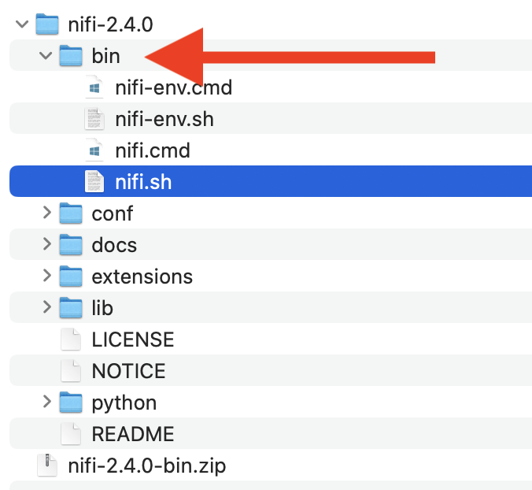
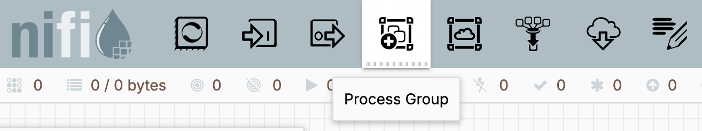

Last Updated: 2025-06-12
Background
This Intro to Apache NiFi flow development tutorial assumes you are new to Apache NiFi, or at least new to developing a dataflow with it. NiFi is an easy to use, powerful, and reliable system to process and distribute data. To be successful with NiFi, it is important to make sure you understand the fundamentals of working with the flow builder and its component types.
Scope of the tutorial
In this tutorial, you will learn about NiFis fundamental building blocks and how to use the UI to assemble a dataflow. You will create a simple, but functional, pipeline running in NiFi by the end of the tutorial.
Learning objectives
Once you've completed this tutorial, you will be able to:
- Explain the function of the major component types; processors, connections, and FlowFiles.
- Construct a dataflow/pipeline with these components.
- Control the run-time lifecycle of your dataflow.
- Perform simple debugging and interrogation of FlowFiles in your pipeline.
- Utilize product documentation for components.
Prerequisites
- Meet the NiFi System Requirements for installation or have access to an existing NiFi runtime.
Download NiFi
Visit https://nifi.apache.org/download/ and under the NIFI tab click on the NiFi Standard 2.x.x button under the Binaries heading.
Use the link at the top of the Apache Software Foundation (ASF) page that surfaces to download a zip file of a precompiled version of NiFi.
Unzip the file
Using your workstation tools, move the downloaded zip file to a directory of your choosing and then unzip it.
Using your workstation tools, find the /bin directory in file structure you unzipped.

Start NiFi
Using your workstation tools, navigate into the /bin directory and execute nifi.sh or nifi.cmd (based on your workstation) followed by run.
You will see something similar to the following which indicates it started.
Using your workstation tools, search /logs/nifi-app.log for lines that start with Generated.
Capture those two values as they are the generated username and password for your instance of NiFi and will be needed to access the UI.
Access the UI
Open a web browser and navigate to https://localhost:8443/nifi and after accepting the self-signed certificate you will see the login screen.
Enter your Username and Password then click on Log in to find a blank canvas.
Create a Process Group
Drag and drop the fourth icon, Process Group, from the tool palette at the top of the page onto the canvas.

Once you release your pointer, a Create Process Group pop-up will appear. Add a Name and click Add.
Right click on the new Process Group and select Enter Group on the contextual menu (or just double click on the Process Group).
You have created a visual abstraction away from the top-level of the canvas which will allow us to focus on just this tutorial.
ETL pipeline
This initial pipeline will ingest zip files and process the contents of them following the generally understood Extract - Transform - Load (ETL) pattern and perform the following logic.
Extract
The first step of the dataflow is to periodically poll an ingest location for files. Zip files are anticipated that will contain text files. Only process each new file once.
Transform
The dataflow will unzip each ingested file to individually process each included file – it will filter out any non-text files for additional investigation.
For the text files, classify them as one of the following sizes based on their content's byte count.
small– when file size is <= 75 KBmedium– files > 75 KB and <= 150 KBlarge– any file > 150 KB
Load
The unzipped text files should be persisted to subfolders aligned with the content size classifications within the egress destination's parent folder.
Set up mock extract & load locations
NiFi ships with components that tackle reading from & writing from a wide variety of databases, object stores, search engines, message platforms, commercial systems, and more. To simplify this tutorial, you will use mock locations on the file system that NiFi is deployed on to extract files from, and to load the end results of the pipeline, to.
Create a /mocks folder somewhere on your file system and then create the following empty subfolders.
Definitions
The Apache NiFi Overview simply states, "NiFi was built to automate the flow of data between systems." This same document identifies these fundamental concepts.
FlowFile | A FlowFile represents each object moving through the system and for each one, NiFi keeps track of a map of key/value pair attribute strings and its associated content of zero or more bytes. |
Processor | Processors actually perform the work including activities such as data routing, transformation, or mediation between systems. Processors can operate on zero or more FlowFiles in a given unit of work. |
Connection | Connections provide the actual linkage between processors. These act as queues and allow various processes to interact. |
In action
Let's understand by doing. Return to your empty canvas.
Add a processor
Hover your pointer over the first tool in the palette to see the Processor tooltip that surfaces.

Click on the Processor tool, drag it onto the canvas, and release your click. This will surface an Add Processor pop-up window. Type listfile in the Filter types search box in the upper right corner of this pop-up window, select ListFile in the updated list, and then click the Add link in the lower right corner.
This processor addresses half of the solution to fulfill our Extract requirements. The canvas will now have this processor on it.
Configure the processor
Right click on the ListFile processor on your canvas to see a contextual menu and select View Documentation.
You should now see the documentation page for this processor type. The Description initially states that it "retrieves a listing of files from the input directory". It further identifies a property named Input Directory. Find that required property in the Properties list of the documentation.
Click on Back to Processor link in the upper left corner to return to the canvas.
Double click on the processor to enter the Edit Processor pop-up window, select the Properties tab, and update the empty Input Directory value to the full path name of the /mocks/ingest folder you created earlier.

Before clicking on Apply, consider reviewing some other notable properties (that do NOT need to be modified) such as Listing Strategy, Recurse Subdirectories, and File Filter. Consult this processor's documentation if you require additional understanding on what their default settings indicate.
Add a second processor
NiFi leverages a list > fetch pattern with processors when retrieving contents from file and object stores. A deeper discussion is beyond the scope of this initial tutorial, but this two processor pattern is primarily used to aid in scalability.
As before, add another processor to the canvas. Type FetchFile in the Filter types search box and select the Type with the same name. Arrange the second processor below the original one.
Create a connection
Hover over the initial ListFile processor to notice a circle with an arrow inside that appears in the middle of the processor.
Click on the circle with the arrow inside and drag the pointer towards the bottom processor. It will initially create a red dotted line which indicates it is ready to make a connection.
Once the pointer is over the second processor, the dotted line will turn green and a green border will appear around the processor the connection is being made to.
Release the mouse to see the Create Connection pop-up window indicating the From Processor and To Processor names. Notice the success box under Relationships is already checked and then click on Add to create the connection.
Add more processors
Since we are expecting zip files to be retrieved by the initial processor pair, add additional processors to determine the MIME type of the file retrieved and then to unzip those files. Add IdentifyMimeType and UnpackContent processors to the canvas and create connections for the Relationship named success from each.
Your flow should look similar to the one below. It should now have three connections in your flow. Each of these is backed by a queue of FlowFiles that houses them until the next processor receives them. These queues are empty right now as we have not started any processing yet.
Relationships?
We will be discussing what a "relationship" is more fully in a future step of this tutorial, but at its simplest a relationship is the opportunity to create a connection between processors. That means data in the system flows through them. The following table is from the FetchFile documentation and acts as an example of what we are discussing.
You already made a connection for the success relationship between FetchFile and IdentifyMimeType. To allow us to begin executing the FetchFile processor, we need to either make connections to each of the remaining relationships OR we can "auto-terminate" them. That would mean that we chose to not see any data flowing down any of those particular relationships.
Open the Edit Processor configuration window for the FetchFile processor and navigate to the Relationships tab. Check the terminate box for the failure, not.found, and permission.denied relationships. Click Apply to return to the canvas.
Not just dev-time
By this point, it might not be evident that the NiFi UI melds dev-time and run-time into a live & interactive experience. You can initialize processing in the same UI as you have already been defining your data pipeline in.
In fact, each processor can be started (and stopped) individually from every other one. The component status bar is showing us, via the red square icon, that we have three processors in a stopped mode. It also shows us we have another processor that is invalid (the yellow triangle).
This status bar details the status of the whole canvas which only contains the four processors we have added so far. You can see these status indicators on the processors themselves.
Begin processing
Using your workstation tools, copy the zip file discussed earlier in this tutorial into the /mocks/ingest folder.
Let's start the initial ListFile processor whose job it is to go to the configured directory and get the name(s) of any files present. Right click on the processor and choose Start on the context menu that surfaces.
Identify FlowFiles
You will notice that the ListFile processor is displayed as running and is reporting in the processor's Out metric that it has emitted 1 FlowFile of 0 bytes in size. That same FlowFile is now in the queue that backs the connection named success leaving this processor.
It is queued because the connection is going to a processor that is not running yet.
As a reminder, a FlowFile is like an envelope that contains a reference to the actual binary data that makes up the object flowing through the data pipeline (in this scenario, there is no actual binary file present as this processor creates FlowFile that simply identify a file that needs to be retrieved) AND attributes about the object. Here are a few of the attributes that will be present.
filename | A filename that can be used to store the data to a local or remote file system. |
uuid | A Universally Unique Identifier that distinguishes the FlowFile from other FlowFiles in the system. |
fileSize | The number of bytes taken up by the FlowFile's content. |
Right click on the success connection's queue and click on List Queue from the context menu.
You will now see the single FlowFile listed that was retrieved by the ListFile processor.
View attributes
Click on the vertical ellipsis to the far right of the entry and select View Details.
You will see the Details tab of the FlowFile pop-up window. The initial information under the FlowFile Details heading references the 3 attributes previously mentioned; filename, fileSize, and uuid. It also shows that this FlowFile has no additional binary content – you will retrieve the zip file shortly.
Click on the Attributes tab and verify the fully qualified location of your /mocks/ingest folder is present.
Click on Ok to close the FlowFile pop-up window and then click on Back to Connection in the upper left corner of the UI to return to the canvas.
Fetch the file
Start the FetchFile processor and notice the connection before it is now empty and the one coming out of it now has a FlowFile; this time with 2.14 MB of content. You can also see this in the In and Out metrics of the processor.
List Queue on the connection and then View Details on the FlowFile. Notice that there is information present under the Content Claim this time. Click Download which will download another copy of the zip file to your workstation.
View content
Using your workstation tools, verify there are 43 files inside the unzipped folder.
Optionally, explore the files in the unzipped folder.
Passing by reference
Start the IdentifyMimeType processor and notice the connection before it is now empty and the one coming out of it now has a FlowFile with the same 2.14 MB of content. Chaining these processors together may seem inefficient, but understand that the FlowFile itself is an object inside a JVM that is being passed by reference. The same is true for the underlying content that the FlowFile refers to.

The In and Out metrics of the processor show one of the ways in which this run-time perspective also provides monitoring metrics. All within the same UI where dev-time activities occur.
The next step in the dataflow is to unzip the file that the FlowFile is tied to using the UnpackContent processor we added earlier.
Relationships
It might seem logical to just "start" the UnpackContent processor now, but if you right click on it you will notice there is no option to do so. This is because it is marked as invalid – notice the yellow triangle next to its name. Hover over that icon and the issues that make it invalid will surface in a tooltip.
All 3 of these problems are essentially the same. They are stating that various "relationships" are invalid because they are "not connected to any component" or "not auto-terminated".
Here are the descriptions of the Relationships from the UnpackContent processor documentation. Reminder; right click on the processor and select View Documentation.
As explained before, these "relationships" are basically the streams of information that a processor can emit FlowFiles into. All processors produce at least one relationship. Double click on the processor to pull up the Edit Processor pop-up and select the Relationships tab to see the list of the 3 relationships the UnpackContent processor produces; failure, original, and success. These are the same from the documentation.
If the original FlowFile was useful in the dataflow for any other purpose, we could create a connection to another processor for that. As we don't need it, go ahead and auto-terminate it.
As we are NOT trying to make a very robust solution in this initial example, check the terminate box next to the failure relationship as well which will ignore any error scenario.
After you click on Apply and return to the canvas, you should only have a single configuration message being displayed when you hover over the invalid icon.
Connections
As we need to have a processor to assign the success relationship to AND knowing our use case indicates we only want to process text files, go ahead and add another processor to the canvas. This time select the RouteOnAttribute processor type that has the following description.
Make a connection to this new processor from UnpackContent and select the success relationship on the Create Connection window.
Queues
The lower part of your pipeline should look similar to this.
This shows the original FlowFile with 2.14 MB of content is still in the queue backing the connection coming into UnpackContent.
Aren't they the same thing?
It might sound like there are a lot of terms that really mean the same thing, but let's unpack them right now before we move on.
- Relationships are the output paths a FlowFile can be emitted through from a processor
- Connections are the coupling of a producing processor's relationship with a consuming processor
- Queues hold the FlowFiles until the consuming processor can perform its action
Easy-peasy! ;) Well, to make it more fun...
- Every processor produces 1, or more, relationships
- Each relationship can have multiple connections as multiple processors can consume each relationship
- Each connection can be configured to handle more than one relationship
But, we'll keep it easy as this is the "intro" tutorial!
Unzip the file
Start the UnpackContent processor and notice the FlowFiles coming into it will be cleared.
Also notice there are 43 FlowFiles in the queue backing the connection leaving this processor.
These represent the 43 files we saw earlier that were included in the original zip file. The 5.31 MB is the byte size of all of the unzipped files. Execute the List Queue feature and see that all 43 of the files are listed along with their physical filename and size.
Verify the first few entries in the queue align with the filenames and sizes that you previously unzipped on your workstation.
View content
One way to view the contents of the binary data tied to the FlowFile is to click on the vertical ellipsis to the far right of the items in the List Queue output. From there, click on View content.
If the binary data is of a content type that NiFi UI can visualize, it will be presented in a new browser tab. Yes, this looks pretty confusing, but it is because NiFi itself is a bit confused. Outside the scope of this initial tutorial is the fact that NiFi has a very sophisticated data lineage model called Data Provenance.
The FlowFiles referencing the individual files from the zip archive inherited many attributes from their parent FlowFile. This included the MIME type value.
Easy enough to look at this more appropriately by toggling the View pull down to select text.
Close the newly opened browser tab when done reviewing the content.
The View and Download options are also available if you select View Details from the vertical ellipsis via the buttons at the bottom of the Content Claim section of the FlowFile pop-up window that surfaces.
Routing options
With FlowFiles containing a reference to some binary content (such as the files we have been processing) AND attribute key-value pairs, it is easy to imagine that making decisions on how a particular FlowFile is processed could depend on information in the content and/or the attributes.
For this initial flow we have to make decisions around the type of underlying content (i.e. text file or not) as well as the size of each. At first, that might suggest we need to start making routing decisions based on the binary content itself. Fortunately, there are attributes that already provide us with an easier way to answer these questions.
Route on attribute
Let's review the documentation for the RouteOnAttribute processor that is already in our flow.
Pull up the Edit Processor window for RouteOnAttribute and navigate to the Relationships tab. You will see there is only a single relationship present; unmatched.
The message below the checkboxes suggests that we can provide some logic of our own to make routing decisions. The documentation confirms this in the Dynamic Properties and Dynamic Relationships sections.
Simply stated this means we can add a custom property and set its value to a user-defined expression that returns a boolean response. Any FlowFile that causes the expression to return true will then be routed down a dynamic relationship named after the custom property.
For our initial routing decision, our requirements tell us to "filter out any non-text file for additional investigation". Let's tackle the implementation for this step-by-step.
Determine criteria
Back in the List Queue screen, click on the vertical ellipsis to the far right of one of the FlowFiles and select View Details. Navigate to the Attributes table and find the filename attribute. Notice the file name has an extension. Likely your's shows .txt as below, but not guaranteed.
Next, we will write an expression that determines if the anticipated file extension is present.
Dynamic property
In the Properties tab of Edit Processor for the RouteOnAttribute processor, click on the + sign at the top right of the list of properties.
Enter tutorial.isText in the Property Name field that surfaces in the Add Property pop-up window.
Click Ok to save it.
Expression language
You will automatically be routed into the property editor for this new dynamic (i.e. custom) property. Enter the following string into the editor.
${filename:endsWith('.txt')}Click Ok to save the expression language and you will then see the new tutorial.isText property listed.
Routing strategy
Click on the value for the only required property, Routing Strategy, and its options are presented in the Value pulldown menu. The information in the tooltips that surface also help in explaining the options.
Leave the Routing Strategy property set to Route to Property name. This will guarantee that any FlowFile meeting the criteria from the tutorial.isText custom property will be routed to a newly created dynamic relationship.
Verify relationships
Notice in the Relationships tab that we now have a new dynamic relationship called tutorial.isText in addition to the existing unmatched one.
Rename the processor
To make our dataflow more readable, rename the processor to something more meaningful. In the Settings tab, change the Name to Verify Text File and be sure to click Apply to save all the processor configuration changes you have made.
Resolve the relationships
It might sound like we are about to become marriage counselors, but we really just need to address the 2 relationships from the newly renamed RouteOnAttribute processor, so let's make sure we have a visual component for each to be connected to.
Happy path
In our requirements, the "happy path" is to continue to process the .txt files. Add an UpdateAttribute processor, rename it to Check fileSize, and then create a connection to it from the prior processor's tutorial.isText relationship. Yes, you can do this without any hand holding! It should look like this once you have completed these steps.
Address errors
For fun, the zip file we are testing with has at least one file inside it that is not a text file. Our requirements simply stated to set these aside for "additional investigation". These errors are in the unmatched relationship we reviewed previously. That is the relationship that still needs to be taken care of to get our Verify Text File processor out of its current invalid state.
We previously found out how to auto-terminate a relationship, but if we do that in this situation we will lose visibility to any FlowFile that might be assigned to this relationship. We need to connect it to another component. Maybe we can use that Funnel component type in the palette?
While SURELY NOT the intended usage of a Funnel (yes... let's tackle it in another tutorial) it is a somewhat common practice in initial dataflow construction to use a Funnel for such a reason. Drag one onto the canvas and connect the unmatched relationship to it.
If you did it right, the yellow triangle next to the Verify Text File processor changed to a red square which indicates it is not running, but that it is eligible to be started.
Run it!
Take advantage of all your hard work by starting Verify Text File (i.e. right click on it for this option to surface) and watch those 43 FlowFiles queued into it flow down into the queues backing the connections addressing the tutorial.isText and unmatched relationships.
Spot-check a few of the 42 FlowFiles flowing through tutorial.isText. Afterwards, do the same to see what the single FlowFile is in unmatched. Be sure to switch the View pulldown to image.
Aha! It is a striking image of The Bard himself. Very nice!
We have done enough "additional investigation" on this image that we can simply dismiss it. A very useful feature, especially when initially developing, testing, and debugging a dataflow, is to delete the contents of a queue. Simply right click on the queue and select Empty Queue from the bottom of the contextual menu that surfaces.
Maybe Hamlet could have said, "To queue, or not to queue: that is the question", but who are we to doubt the accomplished Bill Shakespeare?
As a reminder, our transform requirements include classifying the text files based on their content's byte count. The following categories were declared.
small– when file size is <= 75 KBmedium– files > 75 KB and <= 150 KBlarge– any file > 150 KB
Create an attribute
You might think we can just use something that would be called AddAttribute, but no such processor exists. Fortunately, UpdateAttribute comes to the rescue and acts in an up-sert model by either creating or updating FlowFile attributes.
The Dynamic Properties section of the UpdateAttribute documentation explains we can simply add a new custom property whose name will be used to create an attribute with the same name. The property value will then become the value of the attribute as well.
Let's use the UpdateAttribute processor that we already added to the flow and renamed to Check fileSize to tackle the first part of this. Create a dynamic property named tutorial.sizeCategory with the following expression language code.
${fileSize:lt(75000):ifElse('small',
${fileSize:lt(150000):ifElse('medium','large')})}It should look like the screenshot below. The line break does not show in this view and the ... indicates there is more information than can fit in the preview window.
Verify the logic
As you will use the tutorial.sizeCategory when persisting the files at the end of the data pipeline, add a PutFile processor and connect success from the prior processor to it. Start the Check fileSize processor and verify all 42 FlowFiles have been passed into the new connection.
List queue and verify the tutorial.sizeCategory attribute is being set properly such as in the following examples.
small
medium
large
You've already tackled the E and T of the ETL pipeline requirements, so time to finish up the L and wrap the tutorial up!
Identify the folder
Edit the PutFile processor's Directory property. Begin with the fully qualified directory name for your /mocks/egress folder and then add ${tutorial.sizeCategory} to the end of it. This will allow the FlowFile's specific value for this dynamic attribute to identify the final subfolder to be used when writing each file.
Your value will be slightly different than this example.
/Users/lester/explore/mocks/egress/${tutorial.sizeCategory}Change Conflict Resolution Strategy to replace in case you ingest future zip files that have the same file name that may exist.
Resolve the relationships
Connect failure to the Funnel already on the canvas and auto-terminate success.
Persist the files
To finish the pipeline, Start the PutFile processor. With success auto-terminated there will be no connection to see the FlowFiles that were persisted, but you will see the queue coming into it is now empty. Also, ensure the failure connection is empty.
Trust, but verify
Double-check to see if the files appropriately made it to the correct destinations
2 small files
28 medium files
12 large files
10,000 foot view
If you zoom out until you see the entire flow, it likely looks similar to this.
NiFi's low-code solution is definitely different from just opening a code editor and starting to program in your favorite language. The real trick to get used to is knowing what your overall flow is (i.e. the forest) and being able to mentally zoom in and realize you are working with steps, sometimes micro-steps, (i.e. the trees) to fulfill the logic your dataflow needs.
Less is more
It is easy to imagine that anything much more complex than our simple use case in this tutorial could visually be very complex. There are strategies including using Process Groups, like we nested our work into, to make dataflows more readable & maintainable and to even support multiple development teams tackle different aspects of a complete dataflow.
Speaking of "more"
There are literally hundreds of processors to allow you to tackle so many possible solutions, but don't let that overwhelm you. There are tons of blogs, videos, and tutorials available due to the wide adoption of Apache NiFi at over 8000 organizations. Good luck on your NiFi journey.
Stop NiFi
Return to the terminal where you started NiFi from (there may be additional log messages since you kicked it off) and stop NiFi with a CTRL-C operation.
Delete NiFi
If you want to remove NiFi, simply navigate up two directories and delete the zip file and the folder that was created when unzipping it. Also remember to remove the /mocks directory wherever you created it at.

Congratulations, you've completed the Intro to Apache NiFi flow development tutorial!
What you learned
- The function of the major component types; processors, connections, and FlowFiles.
- How to construct a dataflow/pipeline with these components.
- How to control the run-time lifecycle of your dataflow.
- Simple debugging approaches and interrogation of FlowFiles in your pipeline.
- How to utilize product documentation for components.
What's next?
Check out some of these codelabs...
- Doc ingress/egress with AWS S3
- Versioning NiFi flows with GitHub
- Build a NiFi Python transform processor